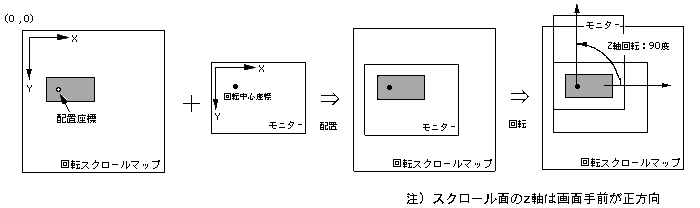

Return to previous page | Return to menu | Go to next page
void
Scroll function
Rotation center coordinate set of RBG
void slDispCenterR(x , y)
FIXED x ;
FIXED y ;
x Rotation Scroll X rotation center coordinate X component (screen coordinate system) y Rotation scroll rotation center coordinate Y component (screen coordinate system)
Set the rotation center coordinates of the rotary scroll.
Rotation center coordinates are used to determine which position on the screen is used to rotate the rotating scroll.
None
The display position of the rotary scroll is determined by placing a monitor with the rotation center coordinates as the reference point in the arrangement coordinates on the scroll map.
The function “slLookR” is used to determine the position coordinates of the rotary scroll.
Refer to the figure below for the relationship between rotation and arrangement.

Note) The Z axis of the scroll surface is forward in front of the screen.
Reference: Chapter 8 Scroll
slDispCenterR